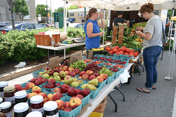
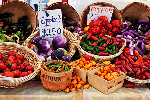
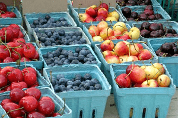
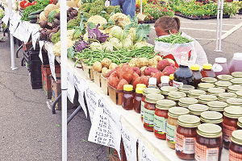
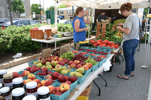
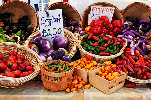
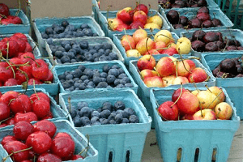
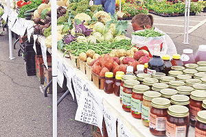

Looking for a local Farmers' Market?
Maybe there's one just around the corner from where you are! If not I am sure there is one closer than you think. I put this map together to maybe help you find the most convient market. Or you can use this to locate other markets that you have not been to. There is always something new at each one. Whatever the time of year. Click on the tab and it will take you to a page that describes the market in a little more detail. Take the next step and enjoy the adventure.
Remember as Hippocrates said "Let thy food be thy medicine".